I recently had access to a licenced IDA ProThe IDA Disassembler and Debugger is an interactive, programmable, extensible, multi-processor disassembler. IDA has become the de-facto standard for the analysis of hostile code, vulnerability research and commercial-off-the-shelf validation. workstation. As a great Nokia N-Gage enthusiast, I took this opportunity to take a closer look at the copy protection mechanisms for this platform.
Here I document my findings and my modus operandi.
I do not want to encourage copyright infringement. Therefore, this article is for educational purposes only. Do not misuse this information to do something that may be illegal in your country. You are responsible for your own actions.
When I started writing this article, I knew very little about Symbian OS. Therefore, it should be noted that this is also a continuous learning process for me. While I consider the documentation of these findings and observations a way to learn more about the ARM assembly language and to gain a basic understanding of data analysis and the process of reverse engineering, I must apologise for any inaccuracies you may encounter. I consider myself quite technically proficient, but nevertheless this subject is relatively unexplored and new to me.
My goal is to make this document as understandable and accessible as possible. I do not want to get too bogged down in the technical details of the N-Gage and Symbian OS, but I want to find out in a self-experiment whether I can reconstruct and apply the techniques developed by the warez groups back in the mid-2000s.
This article will focus on the differences between a retail dump of a game and a cracked version of the same title which I both obtained from the Internet Archive, in order to better understand the copy protection mechanisms, to ultimately adapt and apply the techniques developed by the crackers.
Before I could analyse the changes, I had to identify them first.
In order to compare the folders containing the files of the cracked and uncracked version to each other, I used WinMerge. WinMerge is an Open Source differencing and merging tool for Windows. WinMerge can compare both folders and files, presenting differences in a visual text format that is easy to understand and handle.
For the purpose of this research, I worked on one of the more recent games that was previously cracked by a group called PWNPDA that did not disable the N-Gage Arena feature, thus making this crack limited to the essentials, with minimal impact and changes to the game files. Perfect!
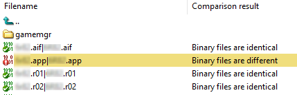
As you can see, only a single file has been altered here. While this is not the case with all N-Gage games, it gives me an opportunity to take a closer look and analyse the crack in detail.
It is also worth mentioning that other games have a more complex copy protection mechanism such as the N-Gage SDK Extension for Enhanced Copy Protection (ECP), which was ultimately also defeated.
The warez group BiNPDA for instance, created their very own proprietary cracking method to achieve this. Most games released by them use a loader, developed for this particular reason, which patches the uncracked executable file, while also faking several hardware conditions such as MMC size, MMC ID, etc.
But the copy protection scheme I document here was the most commonly used until the end of the N-Gage era.
Before I could start analysing the data, it was only logical to get an overview of how the executable file is organised. To achieve this, I opened the executable file using E32ExplorerE32Explorer is a simple tool to visualize the different parts of an Symbian OS E32Image and of a TRomImage. and looked at the header:
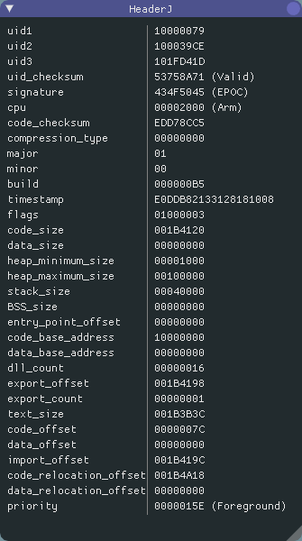
While most of this information was irrelevant to me and I could ignore it, I was very interested in the code and import sections.
I could also ignore the data section since it contains initialised
data. Moreover, most Symbian OS applications are found
as .app or .dll files, so this section
is usually inexistent in the first place.
Furthermore, it is useful to calculate the size of the individual sections, but more on that later on.
I also noted the value of dll_count, because I knew I
might need it later.
| Section | Offset ID | Offset | Section size |
|---|---|---|---|
Code |
code_offset |
7Ch |
1B4120h |
Import |
import_offset |
1B419Ch |
87Ch |
Relocation |
code_relocation_offset |
1B4A18h |
- |
For completeness, here is an overview of the E32Image formatSource: antonypranata.com (archived).:
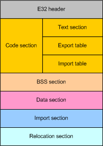
.obj) of
all your source code. The export address table lists all the
exported functions you have in your program. The import
address table lists all the imported functions used in your
program.
.app
or .dll files, this section usually does not
exist either.
To get an overview of the modifications made, still without
understanding exactly what they did, I opened HxDHxD is a
carefully designed and fast hex editor which, additionally to raw
disk editing and modifying of main memory (RAM), handles files of
any size. and pressed Ctrl+k to start a hex
comparison of the cracked and uncracked executable:
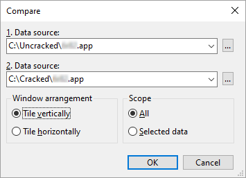
Now I needed something to write, so that I could document the modifications made and the corresponding file offsets. The following information is important: the original hex value, the modified hex value and the offset for each consecutive data set. The offset is displayed as a hexadecimal value in the lower left corner of HxD. I was also able to assign the file offsets to a corresponding section, as I know exactly where each section begins:
Uncracked |
04 C0 9F E5 00 C0 9C E5 1C FF 2F E1 |
|---|---|
Cracked |
1E FF 2F E1 00 C0 9C E5 1C FF 2F E1 |
Offset |
192068h
|
Section |
Code |
In the same manner I noted down all further changes:
Uncracked |
3E 01 00 00 |
|---|---|
Cracked |
D6 00 00 00 |
Offset |
1B3D04h
|
Section |
Code |
Uncracked |
02 00 00 00 01 00 00 00 |
Cracked |
01 00 00 00 00 00 00 00 |
Offset |
1B4148h
|
Section |
Code |
Uncracked |
02 00 00 00 28 08 00 00 01 00 00 00 01 00 00 00 |
Cracked |
01 00 00 00 3E 08 00 00 01 00 00 00 00 00 00 00 |
Offset |
1B4148h
|
Section |
Code |
I did not need to make a note of the last dataset, as I could see
the reason for the change in the section Decoded
text:
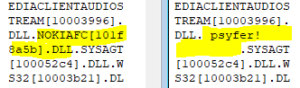
The name of the DLL to be loaded was simply
overwritten with vanities and in this curious case they did not
even use their own signature. The crackers merely copied this
part from another group.
Next, comes the most interesting part. I analysed the actual data at the file offsets I have noted down using IDA Pro. When I opened the file in IDA for the first time, it was important that I selected the correct processor type, and architecture, so that the program could disassemble the file correctly:
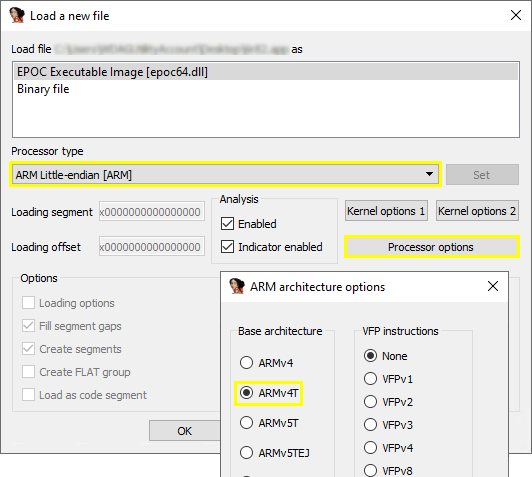
After loading the file into IDA, I selected the Hex
view and navigated to the first noted file offset. The
offset is there, in the lower left corner, together with a
reference that points to the disassembled code:
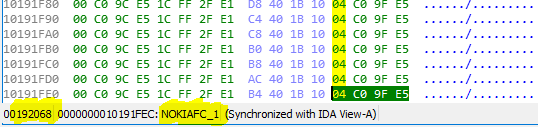
To have a closer look at this part of the program in detail, I
switched back to the disassembly view (IDA View). I
also activated Auto comments under Options →
General. This is a very helpful setting to get a rough
idea of what the code does, even if one is not familiar with the
ARM assembly language.
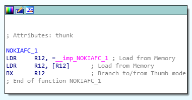
So, what exactly is happening here? Let's summarise:
As I already knew, this section is in the .text or
code section. So, the section of the program's virtual address
space that contains executable instructions. Let's go through the
code line by line:
LDR R12, = __imp_NOKIAFC_1 (04 C0 9F E5)
Basically, LDR is used to load something from memory
into a register. As the prefix __imp_ suggests,
an imported function is loaded at this point. To understand the
purpose of this function, I would have to analyse it separately;
it is located in the file nokiafc.dll and is part of
the device firmware. This would go beyond the scope of this
article. In a nutshell: the instruction gets the address of an
imported function.
Then, it loads the value located at the specified memory address and stores it in a register:
LDR R12, [R12] (00 C0 9C E5)
And last but not least, I jumped to the loaded function with the
instruction BX:
BX R12 (1C FF 2F E1)
Now, let's take a closer look at what the crackers have changed and what this means for the execution of this function:
BX LR (1E FF 2F E1)
Essentially, only the first instruction has been replaced, which
means that the subsequent ones are no longer being executed. I
could, just as well, have overwritten them with
0. LR usually holds the return address. It also
means that this is a return from a function and signifies that
this function will be left immediately.
Tip: an easy way to find out which instruction is represented by a
so-called immediate-value (1E FF 2F E1) is to use an
online disassembler like ODA.A lightweight,
online service for when you don’t have the time, resources, or
requirements to use a heavier-weight alternative. Explore
executables by dissecting its sections, strings, symbols, raw hex
and machine level instructions:
onlinedisassembler.com.
If you want to use it alongside IDA Pro, it must be configured to
use the armv4t platform, little-endian and no-force-thumb:
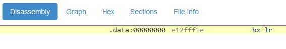
In addition, the following is a very detailed description of how this value is actually encoded: ARM immediate value encoding
And on we go.
Here is the second change made within the code section:
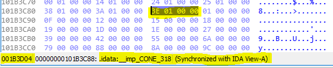
After switching to the disassembly view (by the way, it is advisable to always use the hex view first, otherwise you run the risk of mixing-up the virtual address location with the file offset):
Why does it look so different now? The reason is that this is the import address table (IAT) within the code section. The import address table lists all the imported functions used in the program.
Note that in Symbian OS, all functions are imported by ordinal (not by function name). The idea is to make the library file size smaller and that is exactly what I have found here: the ordinal number 318 as hex value in little-endian notation:
3E 01 → 13Eh → 318
This ordinal number is replaced by the number 214:
D6 00 → D6h → 214
At this stage, the reason for this change is not clear to me. Nevertheless, I have seen this in several cracked games while doing my research. I do not wanna delve into this any deeper.
Now I have come to the last modification where IDA could help me. Strictly speaking, these are two successive changes:
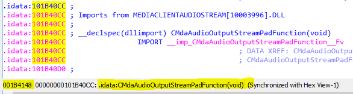
Here the ordinal number of the
function CMdaAudioOutputStreamPadFunction(void) is
changed from 2 to 1:
02 00 00 00 → 01 00 00 00
At this point there are probably some system-specific characteristics. From what I have been able to find out so far, the ordinal number 2 means that the function contacts the shared data server. Again, I do not want to research the details.
And now to the last part, which has to be modified within the code section:
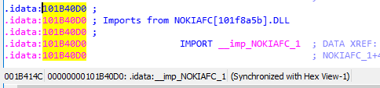
Does this function look familiar? Yes, of course. But here, the ordinal number is set from 1 to 0, which simply means non-existent:
01 00 00 00 → 00 00 00 00
Last but not least, I reviewed the import section. For this, I
opened the file with the hex-editor and scrolled down to the file
offset in the import section as specified in the
file header (1B419Ch).
Here is a brief summary of how it is structured:
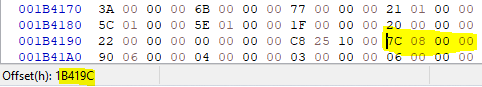
The first Dword (4 Byte) of the import section contains the total size of the section. In this case:
7C 08 00 00 → 87Ch → 2172
This is followed by import blocks for each imported DLL and how
many DLLs are imported in total. I have learned earlier from the
header (dll_count), in this
case, a total of 16.
Each block begins with 2 Dwords. These are the file offset to the
DLL filename and the number of imported functions.
Please note that the offset is always specified relative to the
import section and not relative to the beginning of the file.
This is followed by a list of the ordinal numbers of the imported
functions, before the next block begins.
To make this more clear, this is the first block in detail:
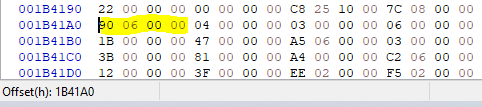
As I now knew, this is the file offset to the DLL
filename relative to the import section:
90 06 00 00 → 690h + 1B419Ch = 1B482C
After I jumped to this file offset, I quickly recognised the file
name of the DLL from which the functions are
imported:
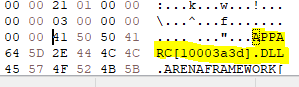
Next, I immediately saw that a total of 4 functions are imported from this file:
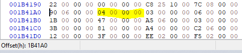
This means that the following 4 Dwords contain the ordinal numbers of these functions:
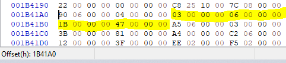
03 00 00 00 → 03h → 3
06 00 00 00 → 06h → 6
1B 00 00 00 → 1Bh → 27
47 00 00 00 → 47h → 71
That's about it. Simple, right? I continued this until I reached
file offset 1B47C0h to get an idea of what has been
modified there.
Uncracked |
02 00 00 00 28 08 00 00 01 00 00 00 01 00 00 00 |
|---|---|
Cracked |
01 00 00 00 3E 08 00 00 01 00 00 00 00 00 00 00 |
Offset |
1B47C0h
|
Section |
Code |
After taking a closer look at the previously noted alterations, there is one number that stood out in particular:
28 08 00 00 → 828h
I could verify this assumption by adding the import offset and looking at the corresponding position in a hex editor:
828h + 1B419Ch = 1B49C4h
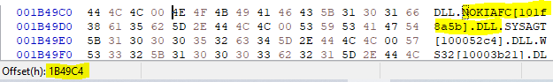
As I could see, the file offset which refers to the file name NOKIAFC.DLL had been altered. Let's see where it points to now:
83Eh + 1B419Ch = 1B49DAh
Apparently, only the next valid DLL was referenced.
I think such an entry must merely not be invalid.
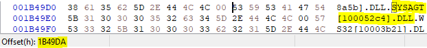
The two following Dwords only indicate that only one function is imported here. However, the ordinal number 1 is to be replaced by 0, i.e. non-existent.
So, the last small change can only be an ordinal number and I
could see from which file this change is made, if I simply
navigated back to the previous DLL file name offset
and checked what is behind it:
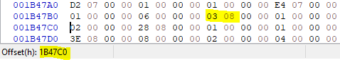
03 08 → 803h + 1B419Ch = 1B499Fh
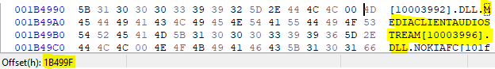
This change is not at all surprising, since I already adjusted the ordinal number of this function in the import address table accordingly. Now I also corrected it in the import section.
That's about it.
Even though I did not manage to figure out every little detail of the copy protection mechanisms, and frankly, this was never my goal, I put my acquired findings to the test and tried to get a copy of a previously unreleased game to work on my regular N-Gage.
This copy had been circulating on the net for quite some time, after it was bought at an auction on eBay and made available on the internet by the buyer shortly after. Unfortunately, this copy only ran on a special developer unit that was sold with the game.
After applying the proper adjustments, the game launched without
any problems and I was able to experience a piece of lost video
game history first hand.
I also learned a lot about ARM assembly language and the basic
process of reverse engineering.
An exciting and definitely educational experience.
I hope you enjoyed this article. If not, let me know – I welcome constructive feedback to improve the quality of my content. If you are interested in the Nokia N-Gage in general, you are cordially invited to visit our small online community. You can find us on Discord, Telegram and in #ngage on EFnet.
At this point I would like to thank my friend Raz. Without him, this article would not have been possible.